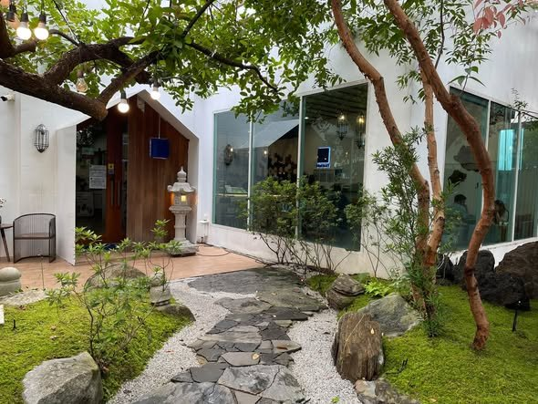
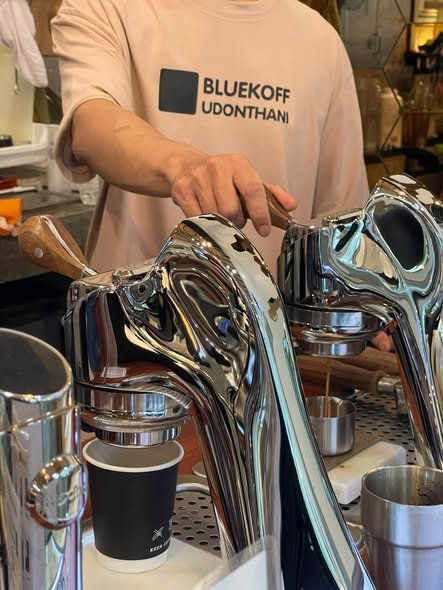
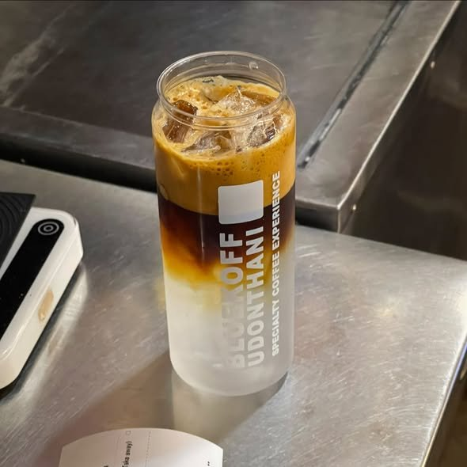
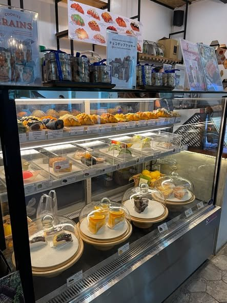
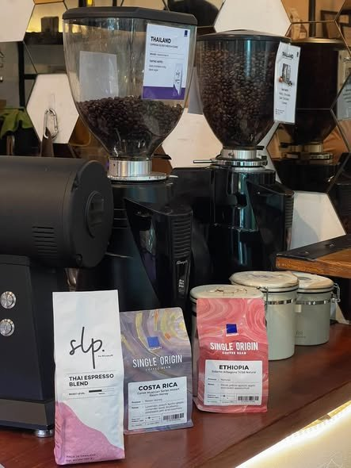

Coffee กาแฟ
- Espresso & Americano
- Cappuccino & Caramel Latte
- Hand drip / pour-over
- Iced espresso specials

Specialty Coffee · Udon Thani
กาแฟคุณภาพ ในสวนสไตล์ญี่ปุ่น ใจกลางเมืองอุดรธานี
Freshly pulled espresso, buttery croissants and a cool, misted garden — right next to Ton Koon Hotel on Mak Khaeng Road.
About us · เกี่ยวกับเรา
Bluekoff Udon is an Authorized Bluekoff Dealer and café in the heart of Udon Thani. Our coffee comes from Bluekoff — one of Thailand's best-known roasters since 2000, with Arabica grown and processed at Doi Chang, Chiang Rai.
Tell our baristas what you like — nutty, chocolatey or bright and fruity — and they'll find the right bean and brew for you, from a classic espresso to a slow hand drip.



Fresh every day
Our pastry case fills up every morning — flaky croissants, cheesecakes, choux and seasonal cakes that pair perfectly with a latte. Stay in the garden or take it to go.
Call to reserve a cakeBluekoff Authorized Dealer · ตัวแทนจำหน่าย
Blends & single origins, retail and wholesale.
Grinders, drippers, tools & accessories.
Advice, sales and setup for home & business.
Coffee & drinks courses, beginner to café-ready.

What guests say
“Beautiful outdoor Japanese-inspired garden… one of the top five coffee houses in Udon Thani.”Google review
“The team is warm and welcoming, and the coffee is truly excellent. Their brownie cheesecake is a must-try.”Google review
“บรรยากาศดี สวนญี่ปุ่นสวยๆ หอมฟุ้งกลิ่นกาแฟ”Wongnai review
Visit · การเดินทาง